Introdução à unidade
Nesta unidade retomaremos o estudo da geometria explorando alguns conceitos primitivos dela, como a ideia de ponto, reta e plano, e fazemos um aprofundamento sobre o estudo de ângulos e polígonos. Apresentamos também a planificação de sólidos, plano cartesiano e ampliação e redução de figuras planas.
A seguir, relacionamos os objetivos que se pretende atingir ao estudar os conceitos desta unidade.
Capítulo 1 – As ideias de ponto, reta e plano
Objetivos:
► Reconhecer, representar e nomear ponto, reta e plano.
► Diferenciar retas paralelas e retas concorrentes.
► Diferenciar, representar e nomear semirreta e segmento de reta.
► Identificar segmentos congruentes.
► Traçar retas paralelas utilizando esquadros.
Capítulo 2 – Ângulos
Objetivos:
► Conceituar ângulo e identificar os seus elementos.
► Determinar a medida de um ângulo em sua unidade-padrão: o grau.
► Identificar e classificar ângulos retos, agudos, obtusos, rasos e plenos.
► Traçar retas perpendiculares utilizando esquadros.
Capítulo 3 – Polígonos
Objetivos:
► Conceituar polígono.
► Reconhecer a presença de polígonos em situações do cotidiano.
► Identificar os elementos de um polígono.
► Reconhecer polígonos convexos e não convexos.
► Nomear os polígonos de acordo com o número de lados.
► Classificar os triângulos de acordo com as medidas dos seus ângulos e lados.
UNIDADE 3 - Ângulos e figuras geométricas planas
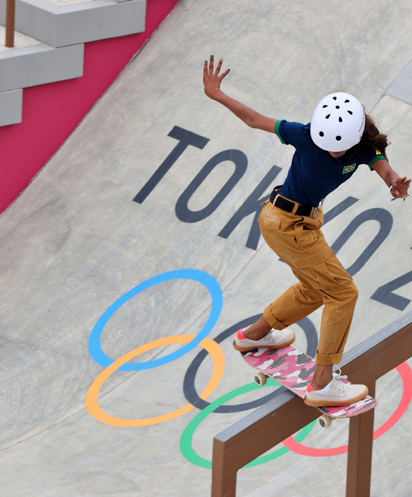O skate é um dos cinco esportes que foram adicionados ao programa dos Jogos Olímpicos na edição de 2020. Um dos destaques dessa edição ficou por conta da modalidade Street feminino, na qual Rayssa Leal, aos 13 anos de idade, conquistou a medalha de prata. Além dela, Pedro Barros e Kelvin Hoefler também conquistaram medalha de prata no skate.
O skate é uma paixão de muitos esportistas e influenciou vários artistas. James Marshall (Dalek), pintor e designer americano, conhecido internacionalmente por suas pinturas e grafites, é um dos artistas influenciados por essa cultura. Observe uma de suas obras.
88
88
► Classificar os quadriláteros em trapézios e paralelogramos.
► Classificar os paralelogramos em losangos e quadrados.
Capítulo 4 – Planificação de sólidos geométricos
Objetivos:
► Relacionar uma planificação com o respectivo poliedro.
► Identificar a forma das faces laterais e a forma da base de uma pirâmide planificada.
► Identificar a forma das faces laterais e a forma das bases de um prisma planificado.
Capítulo 5 – Sistema cartesiano
Objetivos:
► Localizar lugares e pessoas.
► Ler e registrar pontos no plano cartesiano.
► Associar dos vértices de um polígono a pares ordenados.
Capítulo 6 – Ampliação e redução de figuras
Objetivos:
► Ampliar e reduzir figuras planas na malha quadriculada.
► Ampliar e reduzir de figuras planas no plano cartesiano.
Probabilidade e estatística – Educação no trânsito
Objetivos:
► Analisar dados em gráficos de colunas.
James Marshall (1968 -), mais conhecido como Dalek, é um artista americano que nasceu em New London, Connecticut, e formou-se em Artes Plásticas pelo Instituto de Arte de Chicago, em 1995.
Bastante influenciado pela cultura do skate, seu trabalho está presente em diversos produtos ligados a esse universo.
Crédito imagem: S.I./ I WANT CRAYONS
![Pintura de Marshall sem título. Ela é composta por figuras geométricas planas. À esquerda, um triângulo com o vértice apontado para a direita. O triângulo é dividido em três partes. Uma metade dele tem seis linhas diagonais preenchidas pela cor rosa em tonalidades claras e escuras. A outra metade do triângulo, é dividida em duas partes formando um triângulo branco de um lado e do outro dividido em seis linhas diagonais nas tonalidades amarelo e marrom. Quase ao centro, a obra é formada por cerca de 15 triângulos nas cores verde escuro, cinza, azul e verde. A seguir, no cetro da obra, uma coluna na vertical cor preta seguida de várias colunas menores onde se intercalam as cores vermelha e rosa. Mais à direita da obra, retângulos na vertical nas cores bege, branca, preta azul e ocre. No canto inferior direito um triângulo formado por três linhas diagonais e preenchidas por um degradê de cores rosas do escuro até o mais claro.](../../resources/images/000097.png)
CONVERSE
1. Algumas manobras realizadas com o skate consistem em fazer vários giros. Esse movimento pode nos ajudar a compreender a ideia de ângulo. Você sabe qual é a unidade que usamos para medir um ângulo? Grau.
2. Você saberia dizer quanto mede um giro de meia-volta de um esqueitista? 180º.
3. Observando a obra de James Marshall, percebe-se que ela é com-posta por várias figuras geométricas planas. Você poderia identificar quais são? É possível perceber ângulos nessas figuras? Triângulos, retângulos e trapézios. Sim.
89
Orientações específicas
Na abertura da unidade, apresentamos duas situações distintas que utilizam conceitos matemáticos. Em alguns esportes, os ângulos explorados são muito importantes. Além da situação apresentada, o skate, outro esporte que pode ser discutido é a ginástica rítmica, que apresenta movimentos corporais combinados com elementos de balé e dança teatral, realizados de forma harmônica com a música e a utilização de aparelhos próprios, como a corda, o arco, a bola, as maças e a fita. Além do esporte, na outra situação apresentada mostra-se a influência das formas planas na arte. Vários pintores foram influenciados pela geometria em suas obras. Nesse momento, pode-se retomar a discussão de como a Matemática e a Arte sempre caminharam juntas, iniciada na unidade 1.
Explore com os alunos a respeito do esporte, agora olímpico, skate. Na imagem da competição em Tóquio, onde Rayssa Leal conquistou a medalha de prata em sua categoria, sendo a atleta mais jovem a ganhar uma medalha para o Brasil. Esportes como esse podem trazer aos alunos uma compreensão das informações e dos conhecimentos matemáticos que os auxiliam, como é proposto na Competência específica de Matemática 2.
89
| Principais habilidades da BNCC | |
|---|---|
| Competências | CG9, CE2, CE8 |
Neste capítulo, apresentamos os conceitos primitivos de geometria: ponto, reta e plano. Apesar de não apresentarem definições, é possível representá-los. É importante que os alunos saibam identificá-los e nomeá- los.
Sabemos que, muitos séculos antes do florescimento da cultura grega, tanto egípcios quanto babilônicos já haviam construídos canais de irrigação, aquedutos e pirâmides orientadas pelo Norte verdadeiro (não pelo magnético) com erro inferior a um grau (1º). Cortar imensos blocos de pedra de modo a obter encaixes perfeitos e formar uma pirâmide é trabalho de geômetras de alto nível. Esses povos, no entanto, nunca tiveram interesse em especular sobre o espaço desocupado. Para eles, não havia forma ou espaço abstrato: as grandezas estavam sempre relacionadas à quantidade de alguma coisa; as unidades de contagem sempre estavam relacionadas à quantidade de sementes a plantar; o espaço imaginado era ocupado por plantações... Coube aos gregos esse grande salto qualitativo; pela primeira vez, o intelecto humano voltava-se para a forma enquanto divorciada das coisas. Os pensadores gregos dedicaram- se a procurar - e achar - as relações internas das figuras que eles destacavam da natureza. Encontrando intenso prazer intelectual em suas descobertas, chegaram a acreditar que estariam às voltas com seres místicos, com os segredos da formação do cosmo.No século III a. C., o matemático Euclides dedicou-se à exploração do espaço abstrato, a partir das definições e das relações entre os elementos supostamente necessários à construção das figuras geométricas. Para ele, o ponto, a reta, o ângulo, etc., seriam suficientes para o estudo das formas existentes. Estava inaugurado um verdadeiro método para se explorar o Universo, que seria reproduzido, de modo semelhante, em vários outros campos da ciência. Basta lembrar que, na Academia de Platão, onde se promoviam debates sobre os mais variados temas, lia-se logo à entrada: “Não entre quem não for geômetra”.
CAPÍTULO 1 - Ponto, reta e plano
As ideias de ponto, reta e plano

1. Observe as imagens a seguir e troque ideias com seus colegas e com seu professor.
De acordo com as imagens apresentadas, qual delas nos dá a percepção:
a) de ponto? Céu estrelado.
b) de reta? Feixe de luz.
c) de plano? Quadra de esporte.
Nas imagens acima podemos ver situações que lembram pontos, retas e planos. Essas representações são chamadas de conceitos primitivos da geometria, pois não apresentam uma definição. Para representar um ponto, por exemplo, utiliza-se uma letra maiúscula do nosso alfabeto.
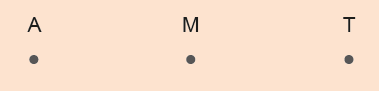90
90
Pode-se considerar que, com o estudo da geometria, o ser humano tomou consciência do abstrato e inaugurou seu exercício intelectual.
Para um maior aprofundamento sobre esse assunto, sugerimos a leitura e consulta à obra Os elementos, de Euclides. Nela, estão os 13 livros de Euclides. Veja, a seguir, algumas definições que são apresentadas no livro I (p. 97):
1. Ponto é aquilo de que nada é parte.
2. E linha é comprimento sem largura.
3. E extremidade de uma linha são pontos.
4. E linha reta é a que está posta por igual com os pontos sobre si mesma.
5. E superfície é aquilo que tem somente comprimento e largura.
6. E extremidades de uma superfície são retas.
7. Superfície plana é a que está posta por igual com as retas sobre si mesma.
8. E ângulo plano é a inclinação, entre elas, de duas linhas no plano, que se tocam e não estão postas sobre uma reta.
[...]
A seguir, temos representadas duas retas:
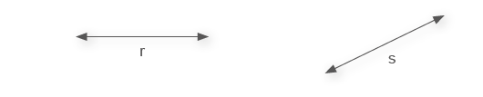Elas são infinitas nos dois sentidos.
Para indicar uma reta, utilizamos uma letra minúscula do nosso alfabeto. Observe abaixo a reta t determinada pelos pontos P e B.
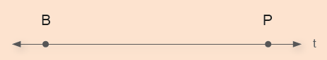A seguir, temos representado um plano. Para indicá-lo usamos uma letra do alfabeto grego: α (alfa), β (beta), γ (gama), etc.
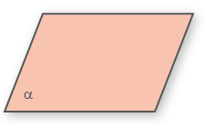Retas paralelas e concorrentes
Observe os pares de retas a seguir.
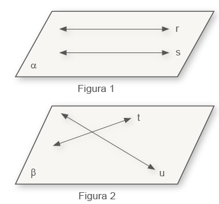As retas da figura 1 não têm nenhum ponto em comum, ou seja, não se intersectam e estão em um mesmo plano. Essas retas são chamadas de retas paralelas.
As retas que compõem a figura 2 apresentam um único ponto em comum. Elas são denominadas retas concorrentes.
UNIDADE 3 - CAPÍTULO 1
91
91
Segmento de reta e semirreta
Para estudarmos o conceito de segmento de reta, semirreta e retas paralelas, podemos usar o recurso de um software de geometria dinâmica. Ao se utilizar ferramentas tecnológicas digitais, como softwares de geometria dinâmica, estamos favorecendo o desenvolvimento da Competência específica de Matemática 5. Veja os passos para construir um segmento de reta na versão: http:// www.geogebra.org/classic.
1. Inicialmente, vamos construir um segmento de reta qualquer. Selecione no menu superior a opção “Segmento”. Na sequência, clique na área em branco marcando os dois pontos que definem o segmento de reta.
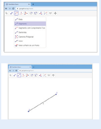2. Após traçar o segmento de reta AB, podemos medi-lo clicando na opção “Valor”.
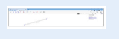3. Também podemos construir um segmento de reta a partir de uma medida indicada. Vamos construir um segmento de reta AB
Segmento de reta e semirreta
Podemos traçar um segmento de reta indicando suas extremidades por meio de dois pontos. Observe:
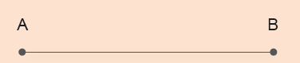Lemos: segmento AB; escrevemos: AB.
O conjunto dos pontos A e B, bem como os pontos compreendidos entre A e B formam um segmento de reta.
Dois segmentos de reta são congruentes quando apresentam a mesma medida.
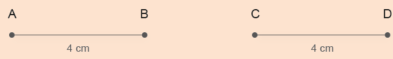Vejamos agora como representar uma semirreta:
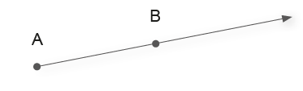Nesse caso, temos parte de uma reta que tem origem no ponto A e passa pelo ponto B. Ela é representada por AB e é chamada de semirreta AB .
Observe o poliedro a seguir.
Ele é formado por 6 faces, 12
arestas e 8 vértices. Cada vértice
desse cubo representa um ponto, cada aresta um segmento de reta e cada face um plano.
Observe o poliedro a seguir

UNIDADE 3 - CAPÍTULO 1
92
92
com 5 cm de comprimento. Para isto, selecione no menu superior a opção “Segmento com Comprimento Fixo”.
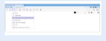4. Ao selecionar a área em branco, abrirá uma janela na qual você deverá digitar a medida desejada. Depois, clique em “OK”.
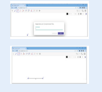5. Pronto, agora você já sabe como construir um segmento de reta utilizando um software de geometria dinâmica.
6. Para construir uma semirreta, basta selecionar no menu superior a opção “Semirreta” e clicar na área em branco para traçá-la.
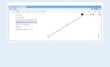Vejamos agora como traçar uma reta paralela a uma reta t dada. Para isso, utilizaremos um instrumento chamado esquadro. Nesse caso, para traçar retas paralelas, precisaremos de dois esquadros.
► Faça coincidir o maior lado do esquadro com a reta t.
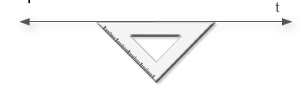► Apoie o maior lado do outro esquadro em um dos lados do esquadro que está coincidindo com a reta, conforme mostra a figura.
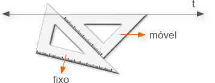► Agora, fixe o esquadro que você apoiou e deslize o outro esquadro para traçar uma reta paralela.
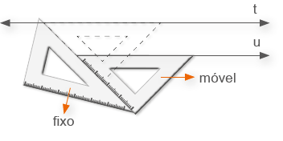► Pronto! Ao retirar os esquadros temos a reta u paralela à t.
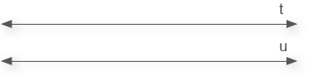Agora é a sua vez. Em seu caderno, trace uma reta u paralela a uma reta t dada. Resposta pessoal.
ENCONTRE SOLUÇÕES
1. Em seu caderno, desenhe:
a) um ponto L;
b) uma semirreta XY;
c) um segmento de reta OP;
d) um plano β.
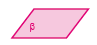2. Para medir um segmento de reta podemos utilizar uma régua. Observe a seguir como realizar esta medição.
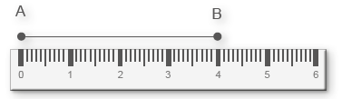► Com o auxílio de uma régua, meça os segmentos a seguir e identifique os segmentos que são congruentes. DE e FG são congruentes e possuem 3 cm cada um. JK e RS são congruentes e possuem 4 cm.
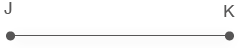 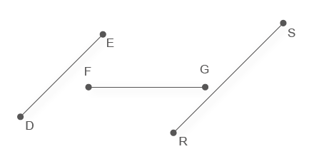3. Leia as afirmações a seguir e verifique se são verdadeiras ou falsas. Copie as falsas em seu caderno, corrigindo-as. medição.
a) Uma reta pode ser medida. Falsa. Uma reta não pode ser medida, pois é infi nita em ambos os sentidos.
b) Um segmento de reta tem começo e não tem fim. Falsa. Um segmento de reta tem começo e fi m. A semirreta é que tem começo e não tem fi m.
c) Utilizamos uma letra do alfabeto grego para indicar um plano. Verdadeira.
d) Dois segmentos de reta que possuem a mesma medida são denominados congruentes. Verdadeira.
UNIDADE 3 - CAPÍTULO 1
93
Vamos construir retas paralelas com o auxílio GeoGebra clássico.
1. No menu superior selecione “Reta” para construir a reta AB.
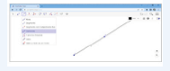2. Em seguida, selecione “Reta Paralela” no menu superior. Clique na área em branco para criar o ponto C e na sequência clique sobre a reta AB para aparecer a reta paralela AB, passando pelo ponto C.
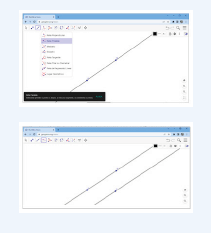93